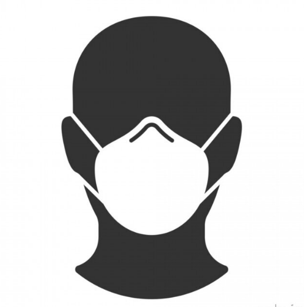

<div class="side__toggle">
  <button class="sideToggler">
    <svg xmlns="http://www.w3.org/2000/svg" class="h-6 w-6" fill="none" viewBox="0 0 24 24" stroke="currentColor" stroke-width="2">
      <path stroke-linecap="round" stroke-linejoin="round" d="M4 6h16M4 12h16M4 18h16" />
    </svg>
  </button>
</div>
<aside class="side bg-accent">
  <div class="side-top">
    <button class="sideToggler sideToggler-close">
      <svg xmlns="http://www.w3.org/2000/svg" class="h-6 w-6" fill="none" viewBox="0 0 24 24" stroke="currentColor" stroke-width="2">
        <path stroke-linecap="round" stroke-linejoin="round" d="M6 18L18 6M6 6l12 12" />
      </svg>
    </button>
    <div class="side-image">
      
    </div>
    <div class="side-menu text-inverse">
      <a class="side-menu__item side-menu__item-active" href="#anchor-about">#about</a>
      <a class="side-menu__item" href="#anchor-works">#works</a>
      <a class="side-menu__item" href="#anchor-technologies">#technologies</a>
      <a class="side-menu__item" href="#anchor-contacts">#contacts</a>
    </div>
  </div>
  <div class="side-bottom">
    <div class="side-copyright"><span>2022 &copy;</span></div>
  </div>
</aside>
